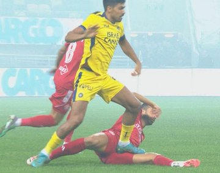
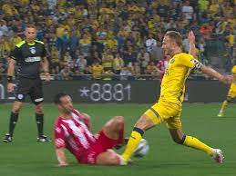
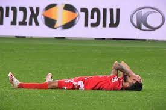

Here is a list of the participants in the derby game, winners and losers.
| Name | Role | Description | Image |
|---|---|---|---|
| Eran Zahavi | Striker | Smashed hapoel a variety of times, a true nightmare for every Hapoel fan | |
| Dor Peretz | Midfielder | Lying on the grass in the cup final derby, made all the Hapoel fans cry |  |
| Enrick Saborit | Center Back | Kicked many Hapoel players' asses | |
| Dan Glazer | Defensive Midfielder | Brutally mowed down Hapoel players |  |
| Omri Altman | Striker | Once he scored in a derby, teased and in the end lost :((( | |
| Dan Eibinder | Midfielder | Every derby is an impersonator. Usually fails. Loser |  |